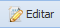
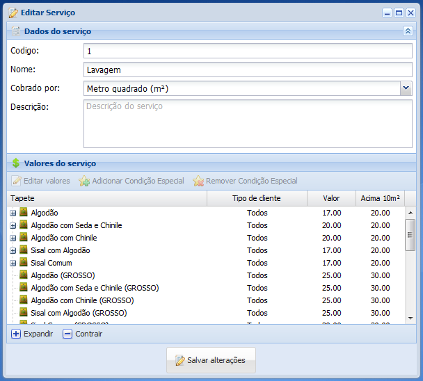
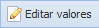
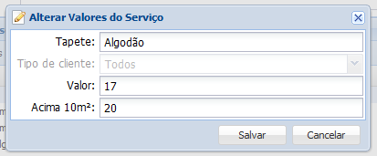
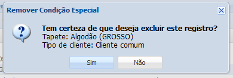
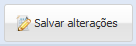

1. Selecione o serviço que deseja editar

2. Clique no botão Editar

3. Abrirá uma nova janela

Faça as alterações desejadas nos campos Nome, Cobrado por e Descrição.
4. Selecione um tipo de tapete para ou mesmo a condição especial do tapete
5. Clique no botão Editar valores

6. Abrirá uma nova janela

Faça a alteração desejada nos campos Tipo de cliente (somente caso esteja editando a condição especial), Valor e Acima 10m², por fim clique no botão Salvar, caso não queira mais realizar as alterações clique no botão Cancelar.
7. Caso queira remover a condição especial do serviço, selecione a condição especial deseja

8. Clique no botão Remover Condição Especial
9. Abrirá uma nova janela

Caso você queira excluir definitivamente a condição especial selecionado clique no botão Sim caso contrário clique no botão Não.
10. Clique no botão Salvar alterações para gravar as alterações realizadas
